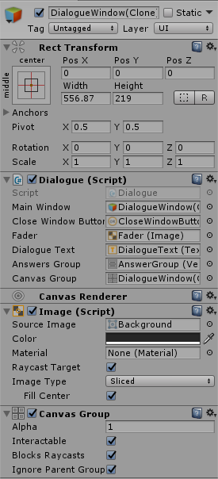

Dialogue Window Prefab
Основное
Префаб окна диалога.
Может быть настроен дизайнером, однако должен иметь объекты и компоненты, перечисленные в пункте "Dialogue Settings".

Main Window
Объект главного окна диалога, с которым будут производиться операции во время работы с диалогами(например, удаление или перемещение окна).
Close Window Button
Кнопка закрытия окна диалога.
Fader
Объект типа "Image", который будет активирован для затемнения окна диалога, если оно не активно.
Данный объект указывается по усмотрению дизайнера.
Dialogue Text
Объект типа "Text" для вывода текста диалога.
Answers Group
Объект типа "Vertical Layout Group" в котором будут создаваться кнопки ответов.
Canvas Group
Объект типа "Canvas Group", который должен быть создан дизайнером как компонент в объекте главного окна диалога(Main Window).
Используется для блокировки управления в Canvas, в случае если диалоговоеокно неактивно.